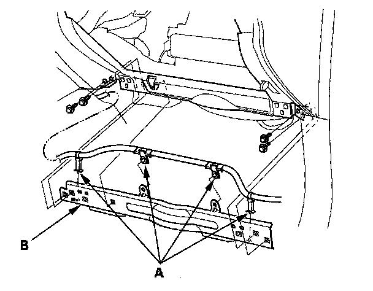
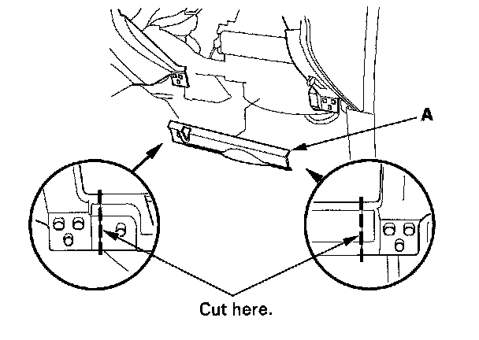
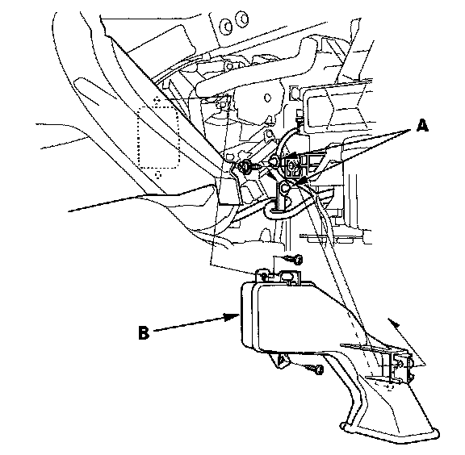
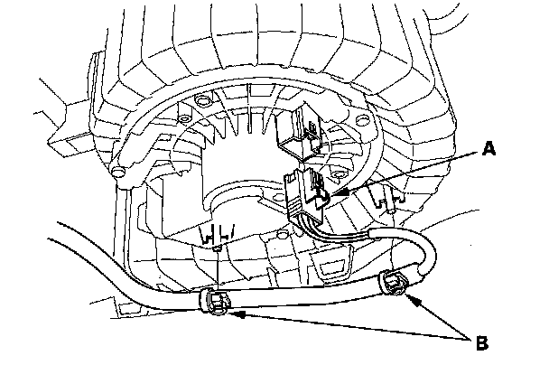
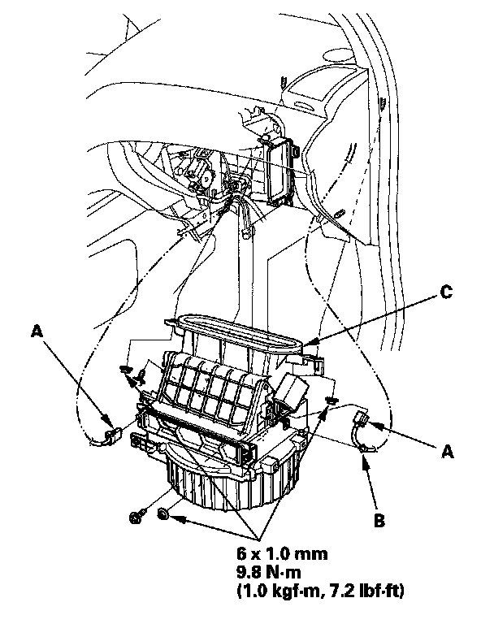

Blower Unit Removal/Installation
Blower Unit Removal/Installation1. Remove the glove box.

2. Remove the harness clips (A), the bolts, and the glove box frame (B).

3. Cut the plastic cross brace (A) in the glove box opening with diagonal cutters in the area shown, and discard it.

4. Remove the wire harness clips (A), the self-tapping screws, and the passenger's heater duct (B).

5. Disconnect the connector (A) from the front blower motor. Remove the wire harness clips (B).

6. Disconnect the connectors (A) from the recirculation control motor and adaptive front lighting control unit, then remove the harness clip (B). Remove the self-tapping screws, the mounting nuts, and the blower unit (C).
7. Install the unit in the reverse order of removal. Make sure that there is no air leakage.